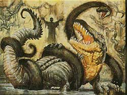
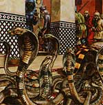

ORISONS DEL SERPENTE
Minor Poison Resistance
| Sfera di riferimento | Protection |
| Range | Tocco |
| Duration | 1 turno |
| Area of Effect | 1 creatura |
| Components | V,S |
| Casting Time | 4 |
| Saving Throw | None |
La creatura protetta da questa magia ottiene +1 al primo tiro salvezza su veleno che dovrà superare nel corso degli effetti dell'orison.
Minor Lizard Regeneration
| Sfera di riferimento | Protection |
| Range | 10 metri |
| Duration | 1 turno |
| Area of Effect | 1 creatura |
| Components | V,S |
| Casting Time | 4 |
| Saving Throw | None |
La creatura protetta da questa magia rigenererà alla fine del round in cui viene ferita fino a 2 punti ferita (un'unica volta). Questa magia funziona solo per le ferite avutesi durante l'effetto della magia. Se la vittima va in coma l'incantesimo non avrà alcun effetto.
Minor Poisoning
| Sfera di riferimento | Protection |
| Range | 10 metri |
| Duration | 5 rounds o speciale |
| Area of Effect | 1 arma |
| Components | V,S |
| Casting Time | 4 |
| Saving Throw | Special |
Quando il chierico lancia questo incantesimo su una qualsiasi arma la rende avvelenata per la durata della magia. Quando quest'arma colpisce per la prima volta una creatura, la magia terminerà immediatamente e costei dovrà superare un tiro salvezza su veleno od essere avvelanata (Onset 1 round, effetto 0/2, delay none, TS normale, Note none). Se non viene utilizzata, appena saranno trascorsi 5 rounds la magia finirà comunque.
1° LIVELLO DI POTERE
| Accurate Striking | Enchantment |
| Sphere : | Combat |
| Range : | Tocco |
| Components : | V,S,M |
| Duration : | 1 round + 1 round per level |
| Casting Time : | 5 |
| Area of Effect : | Un'arma |
| Saving Throw : | None |
Quando il chierico del Serpente lancia questa magia chiede l'aiuto della sua divinità in combattimento affinché guidi la sua arma sui nemici. Per tutta la durata dell'incantesimo il chierico ottiene un bonus di 1d4 danni supplementari con la sua arma principale (che si considerano come danni che comunque non possono permettere di superare i massimali dell'arma). Se il chierico, per qualsiasi motivo, smette di impugnare l'arma la magia termina immediatamente. Il componente materiale è il simbolo sacro del chierico.
| Arcanite Consacration | Enchantment |
| Sphere : | Combat |
| Range : | Tocco |
| Components : | V,S,M |
| Duration : | 10 round |
| Casting Time : | 1 round |
| Area of Effect : | Un'arma di arcanite |
| Saving Throw : | None |
Quando il chierico del Serpente lancia questa magia su una qualsiasi arma che sia costruita nel metallo speciale arcanite, la stessa sarà benedetta dalla divinità. Per tutta la durata della magia l'arma potrà essere considerata a tutti gli effetti come un'arma magica +1. Il componente materiale è una boccetta di acqua santa del Serpente che si sparge sull'arma da benedire.
| Serpent Constriction | Conjuration/Summoning |
| Sphere : | Combat |
| Range : | 15 metri |
| Components : | V,S,M |
| Duration : | 1 round per level (max.7 round) |
| Casting Time : | 4 |
| Area of Effect : | Una creatura |
| Saving Throw : | Negates |
|
 |
Quando
il chierico del Serpente lancia questa magia su una creatura, appare intorno alla
vittima che fallisce il tiro salvezza su magia, un serpente gigante di nebbia verdastra
che inizia a stritolarla fra le sue spire. Il serpente ostacola la maggio
parte dei movimenti della vittima che si considererà incapacitata per tutta la
durata dell'incantesimo che è pari ad un round per livello di lancio fino ad un
massimo di sette round. Il serpente
non ha consistenza per tutte le altre creature e quindi non blocca attacchi e
magie diretti contro la vittima. Il serpente può bloccare creature di
dimensione Small e Medium, mentre le Large hanno un bonus di +10% al tiro salvezza, creature
più piccole o più grandi non saranno affette dalla magia. Il componente
materiale di questo incantesimo è una grossa scaglia di serpente gigante (su un serpente gigante si
trovano |
| Snake Regeneration | Alteration |
| Sphere : | Healing |
| Range : | Tocco |
| Components : | V,S,M |
| Duration : | 1 ora + 1 ora per level |
| Casting Time : | 1 round |
| Area of Effect : | Una creatura |
| Saving Throw : | None |
Quando il chierico del Serpente lancia questa magia e tocca la creatura, questa rigenererà lentamente i punti ferita persi al ritmo di 1 punto ferita all'ora. Si noti che è una rigenerazione leggera per cui non cura direttamente i danni prodotti da tiri critici ma può, se indirizzata su questi, velocizzare il loro recupero (in tal caso non sono però recuperati punti ferita). In ogni caso non cura le emorragie. Questa rigenerazione si cumula con tutti gli altri tipi di rigenerazione (ad esempio con quella del Combattente del Serpente e con quella della Serpentide) ma sulla medesima creatura può avere effetto solo uno di questi incantesimi alla volta. Se questo incantesimo viene lanciato su una creatura in coma, questo sarà immediatamente stabilizzato e costei potrà rigenerare fino ad arrivare a svegliarsi ad un punto ferita prima che la magia termini i suoi effetti. Il componente materiale è un pezzo di corteccia in buono stato di troll definitivamente ucciso (da un troll se ne possono ricavare 2d6 + 3 pezzi se si supera con successo una prova di skinning). Tale pezzo ha valore di mercato di 15 g.p. e pesa 1/2 libbra.
2° LIVELLO DI POTERE
| Nausea | Charm |
| Sphere : | Charm |
| Range : | 30 metri |
| Components : | S |
| Duration : | 5 round |
| Casting Time : | 3 |
| Area of Effect : | One person |
| Saving Throw : | Negates |
Imponendo il palmo della mano il sacerdote del Serpente condiziona la psiche di una persona. Il termine persona indica una qualsiasi creatura umanoide di taglia massima media, con struttura corporea di tipo animale ed originaria del primo piano materiale. Questo incantesimo, dunque, non funziona su esseri provenienti da un diverso piano di esistenza (si pensi ai demoni ed agli elementali) né su creature con struttura fisica non di tipo animale come i non morti, i costruiti, gli esseri vegetali od i melmoidi. Questo incantesimo mentale produce alla vittima dolorosissimi crampi addominali. Se la vittima non effettua con successo un tiro salvezza su mente sarà tormentata da conati di vomito e da atroci dolori per tutta la durata della magia. A tutti gli effetti la vittima sarà considerata impedita (hindered) per tale periodo di tempo. Spesso questa magia è usata dai sacerdoti per punire i loro fedeli disubbidienti che sono particolarmente vulnerabili al potere del Serpente, tutti i fedeli del Serpente infatti hanno un malus di –1 al tiro salvezza ogni 2 livelli del caster ( -1 al 1° e 2° livello, -2 al 3° e 4° ) fino ad una massima penalità di –5.
| Poison Vulnerability | Alteration |
| Sphere : | Combat |
| Range : | 30 metri |
| Components : | V, S |
| Duration : | 10 round |
| Casting Time : | 4 |
| Area of Effect : | Una creatura |
| Saving Throw : | Negates |
Questo incantesimo può essere lanciato validamente su una qualsiasi creatura non
sia immune agli effetti del veleno. La creatura ha diritto ad un tiro salvezza
su magia per evitare gli effetti della magia. Se il tiro salvezza
fallisce la vittima diventerà particolarmente vulnerabile al veleno ottenendo un
malus di -2 a tutti i tiri salvezza su veleno effettuati nel corso della
durata dell'incantesimo.
| Posionous Blade | Enchantment |
| Sphere : | Combat |
| Range : | Tocco |
| Components : | V,S,M |
| Duration : | 1 round per level |
| Casting Time : | 1 round |
| Area of Effect : | Un'arma da taglio o da punta |
| Saving Throw : | Speciale |
Quando il chierico lancia questo incantesimo ed impugna una qualsiasi arma da taglio o da punta la cosparge di veleno per tutta la durata della magia- Per tale periodo di tempo la lama acquisisce riflessi verdi ben visibili ad occhio nudo. Se il chierico, per qualsiasi motivo, smette di impugnare l'arma la magia finisce immediatamente. Il veleno dello spell è di questo tipo : Onset 1 round , Delay 3 rounds , Danni 0 / 12 , Tiro salvezza 0 Assuefazione nessuna. Questo incantesimo non può essere lanciato validamente su un'arma che sia già cosparsa di veleno sia di fonte comune che magica. Il componente materiale di questo incantesimo è la testa di un rarissimo serpente velenoso mummificata che si sfrega sulla lama al lancio dello spell, la testa non si consuma al lancio dello spell ed ha un costo pari a 150 monete d'oro ed un peso pari ad 1 libbra.
| Summon Poisonous Snake | Summoning |
| Sphere : | Summoning |
| Range : | 12 metri |
| Components : | V,S,M |
| Duration : | 3 rounds + 1 round per livello |
| Casting Time : | 1 round |
| Area of Effect : | Speciale |
| Saving Throw : | Nessuno |
|
 |
Quando il chierico lancia questo incantesimo convoca ad esistenza un serpente della categoria Snake Poisonous [link]. Il serpente avrà 2 dadi vita se la magia è lanciata ad un livello di lancio pari od inferiore al 6° livello, mentre avrà 3 dadi vita qualora la magia risulti lanciata dal 7° livello di lancio in poi. La magia, in particolare convocherà ad esistenza un Aspide dalla Cresta Nera, tipo di veleno: modificatore nessuno, onset 1d3 rounds, delay 3 rounds, effetto 0/9 tiro salvezza 0 Ass. none) che combatterà a fianco del chierico seguendo i suoi ordini in battaglia. Il serpente può unicamente combattere per il priest, non sarà quindi possibile impartirgli ordini di tipo diverso dall’attaccare una creatura o di stare fermo (ed eventualmente seguire il chierico). In ogni caso il priest può avere sotto controllo uno solo di questi serpenti (qualora quindi lanci di nuovo la magia prima della fine della precedente, il vecchio serpente svanirà alla comparsa del nuovo). Il componente materiale per questa magia è la muta di un serpente raro, dal costo di 5 g.p. e dal peso di 1/2 libbra, che si consuma al lancio della magia. |
3° LIVELLO DI POTERE
| Armour of the Snake | Abjuration |
| Sphere : | Combat |
| Range : | Tocco |
| Components : | V, S, M |
| Duration : | 1 round per level |
| Casting Time : | 6 |
| Area of Effect : | The caster |
| Saving Throw : | Speciale |
Questa magia può essere lanciata unicamente su una corazza di scaglie o di squame indossata dal chierico. Con questa magia il chierico del Serpente fa apparire sulla propria corazza dei serpenti velenosi. Si tratta di serpenti color rosso accesso e dagli occhi blu scuro che non esistono in natura. Probabilmente si tratta di serpenti sacri alla divinità. I serpenti sono disposti in modo da coprire tutte le zone del corpo del chierico (in media ne appaiono otto). Il corpo di questi serpenti fuoriesce direttamente dalla corazza per circa 30 cm. Questi pericolosi serpenti velenosi attaccheranno per tutta la durata della magia chi si trova intorno al chierico. Per tale motivo, al momento di lancio della magia il chierico dovrà effettuare un attacco su tutti coloro (amici o nemici) si trovino in corpo a corpo con lui. Il tiro per colpire sarà effettuato con Thac0 naturale del chierico senza l'applicazione di alcun modificatore (una magia di "Aid", ad esempio, non modifica questo tiro). Ovviamente questo attacco dei serpenti non si considera in alcun caso come un'azione del chierico. Chi è colpito dall'attacco si considererà morso da uno dei serpenti e subirà 1d2 danno da taglio oltre ad essere avvelenato. Il veleno di tipo iniettivo ha le seguenti caratteristiche: Onset 1 round , Delay 3 rounds , Danni 0 / 12, Tiro salvezza 0 Assuefazione nessuna. Se il chierico si trova in combattimento molto ravvicinato, oppure è avvolto od in altro modo agganciato al corpo di una creatura (si pensi alle spire di un serpente constrictor) costui avrà diritto ad effettuare due attacchi al round contro la creatura che lo avvolge anziché ad uno. Nei round successivi al lancio della magia tutti gli attacchi dei serpenti saranno effettuati al medesimo fattore iniziativa che il chierico dovrà tirare separatamente aggiungendo un modificatore pari a +3. Si noti che i serpenti non effettueranno in alcun caso attacchi di opportunità. Il componente materiale di questo incantesimo è una gemma verde da almeno 50 gp. che si sfrega sulla corazza (o sulle squame) e che si consuma con il lancio dello spell.
| Enslavery | Charm |
| Sphere : | Thounght |
| Range : | Tocco |
| Components : | V, S, M |
| Duration : | Permanente |
| Casting Time : | 1 hour |
| Area of Effect : | 1 veste nera (human) |
| Saving Throw : | Speciale |
Solo i Gran Sacerdoti e gli Adepti del Veleno Sacro possono usare questa magia. Questo potente incantesimo può essere utilizzato solo sulle vesti nere che siano comuni (non siano cioè mostri o appartenenti ad una qualsiasi classe di personaggi). Inoltre occorre che la veste dia il suo consenso a divenire serva di un determinato Tempio del Serpente. Il lancio dello spell coincide con un rito apposito al quale devono presenziare oltre al chierico almeno altre 10 vesti nere e 2 vesti azzurre e 1 rossa. Il rito prevede quasi un'ora di preghiere al Serpente compiute dalle vesti nere spettatrici che formino un cerchio umano intorno alla prescelta e al chierico. Al termine delle preghiere il chierico porgerà alla veste un calice pieno del sangue di un serpente raro da almeno 150 g.p. (ad Arelia il Serpene dalle corna nere va bene). Se la veste berrà di sua spontanea volontà dal calice sarà soggetta agli effetti di questo incantesimo senza possibilità di tiro salvezza altrimenti avrà diritto ad un tiro salvezza su magia per evitare gli effetti dell'incantesimo (se il tiro riesce il chierico non potrà più provare a soggiogare la stessa creatura fino al superamento di un nuovo livello di esperienza). Dispel Magic non elimina questa magia che per essere eliminata deve essere trattata come una maledizione (Remove Curse). Le vesti nere soggette a tali magie prendono il nome di Vesti Nere Sacrali portano la staffa del Serpente e sulla veste nera hanno il ricamo di una piccola serpe dorata all’altezza del cuore. Chi è soggetto a questa magia entra in uno stadio di ipnosi per il quale obbedirà agli ordini del chierico che lo ha ipnotizzato qualsiasi essi siano, il chierico potrebbe ordinare alla veste di uccidersi buttandosi da un dirupo. Il Gran Sacerdote del suo tempio può comandare qualsiasi Veste Nera Sacrale del Tempio anche se è stata ipnotizzata da un Adepto del Veleno Sacro e in caso di contrasto tra ordini la veste obbedirà al Gran Sacerdote. Per il resto la veste si comporterà normalmente ad eccezione di mostrare un bisogno morboso di trovarsi vicino al chierico che la ha ipnotizzata o comunque al Gran Sacerdote del suo Tempio. Se ogni giorno non potrà trascorrere parte del suo tempo (bastando un’oretta) con una di tali figure guida cadrà in una catalessi comatosa che la porterà a morire di inedia dopo alcuni giorni (potrà resistere per un numero di giorni al massimo = ad 1/3 della propria costituzione arrotondato per difetto) a meno che il chierico non torni o venga liberata dalla maledizione. Un chierico può avere un numero massimo di Vesti Nere Sacrali, nello stesso momento, pari a 1 ogni due livelli ( 3 al 6°, 4 al 8°, ecc…). Potrà sostituirle in caso di morte o rimozione della maledizione. Si noti che il Gran Sacerdote può avere praticamente un numero di Vesti Nere Sacrali pari alle proprie più quelle dei propri Adepti del Veleno Sacro, in teoria infatti il Gran Sacerote potrebbe comandare ad una Veste Nere Sacrale di lasciare l’Adepto che l’ha ipnotizzata e di obbedire solo ai suoi comandi, in tal caso comunque la veste conterebbe ai fini del numero massimo di Vesti Nere Sacrali che l’Adepto potrà avere fino a che non muore o è sciolta dalla maledizione. E’ usanza apprezzata infatti che un Adepto del Veleno Sacro regali in questo modo al Gran Sacerdote una Veste Nere Sacrale. Se però il chierico che l’ha ipnotizzata muore o comunque non può più essere considerato un chierico del Serpente e il Gran Sacerdote ha già utilizzato tutto il suo potere per le proprie Vesti Nere Sacrali, quella donata o comandata entrerà nello stadio di catalessi comatoso sopra descritto e gli unici modi per salvarla saranno liberarla dalla maledizione o far si che il Gran Sacerdote ottenga uno “spazio libero” per lei che in tal modo diventerà. Nessun chierico, ivi compreso il Gran Sacerdote, ha il potere di sciogliere la veste nera dal vincolo senza rimuovere magicamente la maledizione. A parte il caso eccezionale sopra descritto (che un Adepto doni la veste al Gran Sacerdote e poi muoia e quest’ultimo abbia uno “spazio libero” per accoglierla) non sono in alcun caso possibili passaggi di vesti nere sacrali far i Chierici del Serpente. Il componente materiale del rito ha un costo base di 50 g.p. ( 65 karsi ) in arredi sacri + il costo del serpente.
| Reptile Regeneration | Alteration |
| Sphere : | Healing |
| Range : | 18 metri |
| Components : | V, S, M |
| Duration : | 1 round per level |
| Casting Time : | 3 |
| Area of Effect : | Un fedele del Serpente |
| Saving Throw : | None |
Chi si trova sotto l’effetto di questa magia rigenera le ferite prodottosi nello scontro, di qualunque tipo esse siano. L’ammontare di danno rigenerato dipende dalla devozione al culto del Serpente. Le Vesti Nere rigenereranno 1 punto ferita al round, le vesti azzurre 2 punti ferita al round, le vesti rosse 3 punti ferita al round mentre i chierici ed i combattenti del Serpente 4 punti ferita al round. Saranno rigenerate però solo le ferite prodottosi durante la durata della magia, non quindi quelle precedentemente subite. La rigenerazione avviene alla fine di ogni round di durata dell'incantesimo e continua a meno che la creatura non cada in coma o la magia sia precedentemente dissolta. Il componente materiale è la coda di una lucertola rara dal valore di 5 monete d'oro e dal peso di 0,2 libbre che si consuma al momento del lancio.
| Serpent Arrow | Alteration |
| Sphere : | Animal |
| Range : | Tocco |
| Components : | V, S, M |
| Duration : | 1 day |
| Casting Time : | 1 round |
| Area of Effect : | 1 arrow or bolt |
| Saving Throw : | Speciale |
Con questa magia il Sacerdote del Serpente infonde lo spirito di una serpe velenosa (deve trattarsi di uno Snake Common Poisonous) in un dardo da balestra o una freccia da arco. Qualora una creatura venga ferita dalla freccia o il dardo oltre a subire il danno dell’arma subirà gli effetti del veleno come se fosse stata morsa dal relativo serpente (si applicano i normali tiri salvezza). Il veleno dipende quindi dal tipo di serpente utilizzato, non possono essere usate però creature mostruose ma solo serpenti classificati normali. Se dopo un giorno dal lancio la freccia o il dardo non sono utilizzate spariranno dissolvendosi in polvere finissima. Il componente materiale dell'incantesimo è il serpente vivo che si ingloba svanisce al lancio della magia e la freccia o il dardo che deve essere incantato.
4° LIVELLO DI POTERE
| Enhance Ceremony | Summoning |
| Sphere : | All |
| Range : | Tocco |
| Components : | V,S,M |
| Duration : | Speciale |
| Casting Time : | 1 round |
| Area of Effect : | Una creatura |
| Saving Throw : | None |
Questo incantesimo può essere lanciato dal chierico del Serpente unicamente su una qualsiasi veste nel corso di una cerimonia sacra. Dopo la conclusione del rito la veste interessata inginocchiandosi davanti al chierico riceve una sua speciale benedizione. Da allora in poi, per una sola volta, la creatura benedetta potrà usufruire di un bonus divino di +4 ai tiri per colpire, ai danni, alla classe armatura od ai tiri salvezza effettuati nel round di combattimento scelto dal beneficiario. Costui, quindi, dovrà decidere nella fase delle intenzioni quando attivare questo potere e quale tipologia di beneficio (tra i quattro sopra specificati) applicare nel corso del round. Una volta attivato questo potere la magia terminerà. Una veste nera può essere sotto effetto di uno solo di questi incantesimi contemporaneamente, una veste azzurra può ricevere due di queste magie contestualmente, una veste rossa può essere soggetta contemporaneamente a tre di questi incantesimi. Una singola creatura, però, può ricevere uno solo di questi incantesimi nel corso di una singola cerimonia sacra e potrà comunque attivarne solo uno in ogni singolo round di combattimento. Il componente materiale di questo incantesimo sono incensi rari dal valore di 50 monete d'oro e dal peso di 1 libbra che si consumano al lancio dell'incantesimo.
| Snake Skin | Alteration |
| Sphere : | Protection |
| Range : | 0 |
| Components : | V,S,M |
| Duration : | 1 round per level |
| Casting Time : | 4 |
| Area of Effect : | The Caster |
| Saving Throw : | None |
Quando il chierico lancia questo incantesimo la sua pelle diviene interamente ricoperta da dure e resistenti squame di serpente gigante. Per tale motivo, per tutta la durata dell'incantesimo il chierico riceverà un bonus di 2 punti sulla propria classe armatura che, essendo donati dalla sua pelle, si considereranno solo dopo che sono state penetrate le altre difese ivi compresa la sua armatura, inoltre il corpo del chierico si considererà comunque toccato dall'attacco nonostante lo stesso non lo riesce a ferire potendo così subire eventuali effetti secondari dell'attacco (si pensi al tocco di un non morto). Le scaglie che ricoprono la pelle del chierico, inoltre, sono così resistenti che costui ridurrà, per tutta la durata dell'incantesimo, di1 danno ogni singolo attacco fisico (botta, taglio, punta) subito (indipendentemente dal numero di dadi di danno tirati con l'attacco), questo beneficio non si estende ai danni diversi da quelli fisici (come fuoco e come i danni di molte magie i cui effetti non possono essere ricondotti a quelli di danni fisici). Deve osservarsi, inoltre, che questa resistenza non difende il chierico dagli effetti degli attacchi diversi dai danni fisici anche qualora il danno provocato da tali attacchi non sia sufficiente a superare la resistenza posseduta. Qualora, ad esempio, il chierico sia attaccato da un ragno velenoso il cui morso provochi 1 punto danno, lo stesso non perderà il punto ferita causato dal morso ma sarà regolarmente soggetto al veleno dell'aracnide. Il componente materiale è un serpente in miniatura d'argento dal costo di 25 monete d'oro e dal peso di 0,5 libbre che si consuma al lancio della magia.
| Superior Posionous Blade | Enchantment |
| Sphere : | Combat |
| Range : | Tocco |
| Components : | V,S,M |
| Duration : | 1 round per level |
| Casting Time : | 1 round |
| Area of Effect : | Un'arma da taglio o da punta |
| Saving Throw : | Speciale |
Quando il chierico lancia questo incantesimo ed impugna una qualsiasi arma da taglio o da punta la cosparge di veleno per tutta la durata della magia- Per tale periodo di tempo la lama acquisisce riflessi verdi ben visibili ad occhio nudo. Se il chierico, per qualsiasi motivo, smette di impugnare l'arma la magia finisce immediatamente. Il veleno dello spell è di questo tipo : Onset 1 round , Delay 4 rounds, Danni 4 / 20, Tiro salvezza 0 Assuefazione nessuna. Questo incantesimo non può essere lanciato validamente su un'arma che sia già cosparsa di veleno sia di fonte comune che magica. Il componente materiale di questo incantesimo è la testa di un raro serpente velenoso mummificata che si sfrega sulla lama al lancio della magia. La testa ha un costo pari a 50 monete d'oro, un peso pari ad 1 libbra e si consuma al lancio dell'incantesimo.
| Valor | Summoning |
| Sphere : | Combat |
| Range : | 0 |
| Components : | V,S,M |
| Duration : | Speciale |
| Casting Time : | 5 |
| Area of Effect : | Speciale |
| Saving Throw : | None |
 |
Questo incantesimo trae origine da quella parte della filosofia del
Culto del Serpente che teorizza la superiorità dei pochi sulla
moltitudine. Il presupposto per lanciare validamente questa magia è che
il chierico si trovi coinvolto nel corso di una battaglia. Deve, cioè,
essere già iniziato un combattimento nel senso che deve essere già stato
effettuato un qualsiasi attacco magico o fisico tra il chierico od un
suo alleato, che si trovi entro 30 metri dallo stesso, ed uno dei suoi
nemici. La magia, inoltre, può essere lanciata validamente solo se sono
rispettati altri due presupposti: |
5° LIVELLO DI POTERE
| Increased Regeneration | Alteration |
| Sphere : | Necromancy |
| Range : | Tocco |
| Components : | V,S |
| Duration : | Speciale |
| Casting Time : | 1 round |
| Area of Effect : | Una creatura |
| Saving Throw : | None |
Questo incantesimo può essere lanciato dal chierico del Serpente su qualsiasi creatura sia dotata di corpo organico di tipo animale. Quando il chierico lancia questa magia il corpo della creatura diventerà particolarmente adatto alla rigenerazione delle ferite ottenuta tramite la rigenerazione dei chierici del Serpente. In particolare, i primi due incantesimi di "Snake Regeneration" (1° livello di potere speciale) che la creatura riceverà permetteranno la rigenerazione delle ferite al ritmo di 1 punto ferita al round anziché di 1 punto ferita all'ora. La magia terminerà appena saranno finiti gli effetti del secondo incantesimo di "Snake Regeneration" lanciato sulla creatura o comunque al momento del verificarsi del flusso di energia divina del Serpente.
| Poisonous Cloud | Conjuration |
| Sphere : | Combat |
| Range : | 15 metri |
| Components : | V,S,M |
| Duration : | 1 round ogni 2 livelli |
| Casting Time : | 7 |
| Area of Effect : | Speciale |
| Saving Throw : | Speciale |
Quando il chierico lancia questo incantesimo convoca ad esistenza una nube venefica dal colore verde intenso. Il chierico può formare la nube dandole la forma che desidera. In particolare, la nube potrà occupare un numero di sfere (esagoni) di 3 metri di diametro corrispondenti al livello di lancio della magia. Il chierico può disporre queste aree a piacimento purché siano disposte senza soluzione di continuità tra di loro e siano tutte allo stesso livello di altezza dal suolo (non potendosi disporre una sull'altra). Inoltre, almeno una delle sfere deve trovarsi all'interno del raggio di azione dell'incantesimo. Orbene, per tutta la durata della magia che è pari ad 1 round ogni due livelli di lancio dell'incantesimo (5 round al 9° e 10° livello di lancio, 6 round all'11° e 12° livello di lancio, e così via...) tutte le creature che, alla fine di ogni round di combattimento, si troveranno all'interno della nube subiranno gli effetti del seguente veleno: Tipologia Contatto Gassoso, Onset 1 round, Effetti 0/16, Delay 2 round, Tiro Salvezza -5%, Assuefazione nessuna. Si noti, quindi, che il mero passaggio all'interno della nube non permette una adeguato avvelenamento. Deve osservarsi, infine, che vento forte può eliminare la nube velenosa prima della sua regolare scadenza. Il componente materiale di questo incantesimo è una sfera di zolfo, cera e veleno di serpente dal peso di 1/10 di libbra e dal costo di 30 monete d'oro.
| Resilience to Poison | Abjuration |
| Sphere : | Necromancy |
| Range : | 12 metri |
| Components : | V,S (M) |
| Duration : | Speciale |
| Casting Time : | 1 round |
| Area of Effect : | Una creatura |
| Saving Throw : | None |
Questo incantesimo può essere lanciato dal chierico del Serpente su una qualsiasi creatura. Quando la magia è lanciata la creatura sarà immune all'avvelenamento per 3 round + 1 round per livello di lancio della magia. In particolare, la creatura non potrà avvelenarsi nonostante venga a contatto con qualsiasi tipo di veleno, sia esso di origine magica che naturale. Si noti, però, che qualora la creatura, al momento del lancio di questa magia, risulti già avvelenata (sotto l'onset di un veleno), questo incantesimo non bloccherà gli effetti dell'avvelenamento che si verificheranno regolarmente. Questa magia, infatti, si limita ad impedire che nel corso della sua durata il soggetto possa essere avvelenato. Questo incantesimo può essere lanciato sullo stesso chierico del Serpente che lo ha memorizzato, in questo caso il chierico potrà scegliere di utilizzarlo secondo la normale durata oppure di potenziarlo facendolo permanere fino al verificarsi del successivo flusso di energia divina del Serpente. Per utilizzarlo secondo tale modalità il chierico dovrà però usare un componente materiale costituito da una sfera mista di cera di vespa gigante ed erbe rare dal peso di 1/10 di libbra e dal costo di 25 monete d'oro.
| Viper's Strike | Alteration |
| Sphere : | Combat |
| Range : | 0 |
| Components : | V,S |
| Duration : | 1 hour |
| Casting Time : | 1 round |
| Area of Effect : | The Caster |
| Saving Throw : | None |
Quando il chierico lancia questo incantesimo altera le proprie funzioni corporali rendendosi, in parte, scattante come una vipera. Nel corso dell'intera durata di questo incantesimo, infatti, qualora il chierico combatta utilizzando un'arma da corpo a corpo, costui potrà effettuare un attacco supplementare ogni due round a partire dal secondo round di combattimento che effettua contro il medesimo avversario. Qualora il chierico cambi avversario nel corso del combattimento costui dovrà necessariamente iniziare nuovamente il conteggio dei round di combattimento. In particolare il chierico non potrà utilizzare la competenza Combat Tactics per deviare l'attacco multiplo concesso da questo incantesimo su un avversario diverso da quello che aveva attaccato con il primo attacco. L'attacco supplementare concesso da questo incantesimo, essendo un attacco multiplo successivo, avrà luogo alla fine del round. Deve osservarsi, infine, che questo incantesimo non darà alcun beneficio a chi già può effettuare, per qualsiasi motivo, più di un attacco al round (ad esempio, se già appartenente ad una classe di combattenti oppure se sotto effetto di altro incantesimo come "haste").